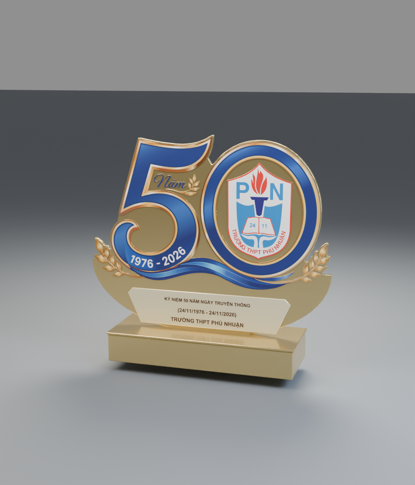

BẢN SẮC · TRUYỀN THỐNG · KHÁT VỌNG
Mỗi đường nét,
một câu chuyện.
Từ ngọn đuốc tri thức đến dải lụa tiếp nối — mỗi chi tiết cùng tạo nên dấu ấn 50 năm Trường THPT Phú Nhuận.
KỶ NIỆM 50 NĂM NGÀY TRUYỀN THỐNG
Tri thức được thắp sáng. Truyền thống được tiếp nối.
Khát vọng vươn xa được trao qua từng thế hệ.

Chưa tải được mô hình 3D.
⤢ Kéo để xoay · Cuộn hoặc chụm để phóng to
BẢN SẮC · TRUYỀN THỐNG · KHÁT VỌNG
Từ ngọn đuốc tri thức đến dải lụa tiếp nối — mỗi chi tiết cùng tạo nên dấu ấn 50 năm Trường THPT Phú Nhuận.
THPT PHÚ NHUẬN · 1976 — 2026
Tri ân quá khứ.
Kiến tạo tương lai.
Vững bước vươn xa.